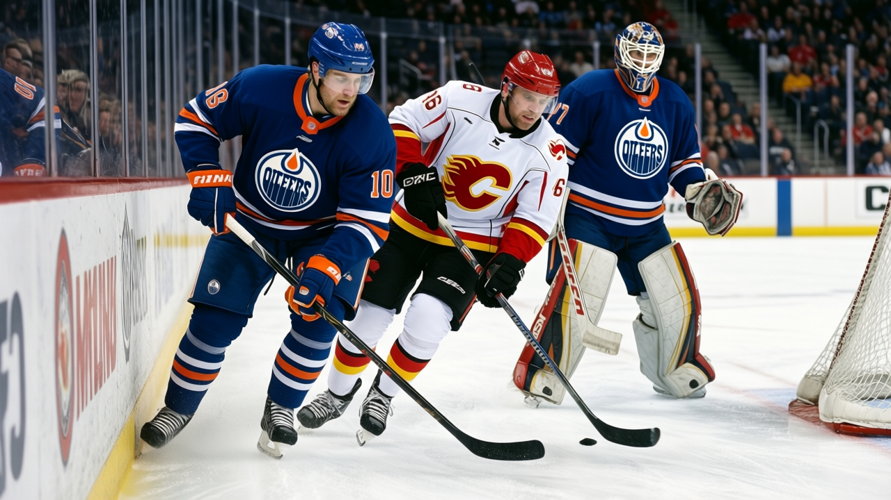

Award Watch: Ryan Smyth is 10 below his base, and the cheapest roster in the league is carrying him to 55 points
The Hart Trophy winner scored 163 points last season. He has 63 in 43 this one, and the Book thinks the number is not coming back on its own.
 Howard BlaineSenior writer, The Blaine Rankings · The Hockey Gazette
Howard BlaineSenior writer, The Blaine Rankings · The Hockey Gazette
The piece
 Ryan Smyth85 won the Hart Memorial Trophy last April for a season of 74 goals, 89 assists and 163 points over 82 games. He is 28 years old. Through 43 games this season he has 31 goals, 32 assists and 63 points. The League Scouting Bureau has his overall grade at 79, against a base of 89. The Development Index has him 10 below where his contract and his ceiling put him.
Ryan Smyth85 won the Hart Memorial Trophy last April for a season of 74 goals, 89 assists and 163 points over 82 games. He is 28 years old. Through 43 games this season he has 31 goals, 32 assists and 63 points. The League Scouting Bureau has his overall grade at 79, against a base of 89. The Development Index has him 10 below where his contract and his ceiling put him.
He is scoring at 0.72 goals a night against 0.90 last season. His assists have dropped faster, from 1.09 a game to 0.74. The point total over 43 games is 63. He would need 100 points in 39 games to reach the number that won him the trophy, and he has never scored 100 in a season. The background sheet carries his career-high as 105 points over 72 WHL games in 1993-94. In the league, his best before last season was 61 points over 82 games, his third season, at 21.
A 79 puts him below  Mike Comrie84, who is 24 and has 67 points in 43 games at a pace the Bureau prints at 128. Smyth is on a one-year deal at $2.50M with nothing left on it. He turns 29 in February. If the Index is right and this is the shape of him now, the market will not pay a 79 what it pays an 89.
Mike Comrie84, who is 24 and has 67 points in 43 games at a pace the Bureau prints at 128. Smyth is on a one-year deal at $2.50M with nothing left on it. He turns 29 in February. If the Index is right and this is the shape of him now, the market will not pay a 79 what it pays an 89.
 Edmonton Oilers sit 17-14-3, 55 points, one game in front of
Edmonton Oilers sit 17-14-3, 55 points, one game in front of  Minnesota Wild and one behind
Minnesota Wild and one behind  Colorado Avalanche and
Colorado Avalanche and  Vancouver Canucks in the Northwest division's three-way pile. They have given up 173 goals against 165 scored, which is a team that wins and loses roughly the same way. Their payroll is $36.81M. Their cost per point is $0.67M, the lowest number on the sheet, 4 cents cheaper than Vancouver Canucks and $0.95M cheaper than
Vancouver Canucks in the Northwest division's three-way pile. They have given up 173 goals against 165 scored, which is a team that wins and loses roughly the same way. Their payroll is $36.81M. Their cost per point is $0.67M, the lowest number on the sheet, 4 cents cheaper than Vancouver Canucks and $0.95M cheaper than  Detroit Red Wings. The profit line reads $22.44M. The attendance is 15026 a night at $79 a seat.
Detroit Red Wings. The profit line reads $22.44M. The attendance is 15026 a night at $79 a seat.
The Oilers do not need Smyth to be the man who scored 163. They need him to be the man who scores 63 in 43 and keeps the engine turning, because the room around him is thin. At $2.50M he is the highest-paid man on a roster where the best-grade teammate is  Tommy Salo88 at 81. The next names are
Tommy Salo88 at 81. The next names are  Mike York82 at 76,
Mike York82 at 76,  Radek Dvorak81 at 75,
Radek Dvorak81 at 75,  Brad Isbister80 at 74.
Brad Isbister80 at 74.
The grade says it is structural, not a slump
The Bureau's potential line on Smyth reads 71. Potential is the Book's likelihood of development, not a ceiling. A potential of 71 on a man with a base of 89 and a current grade of 79 means the Index has stopped believing the 89 is recoverable. A cold streak is a man whose form drops while his potential stays above his base; Smyth's potential is 18 points below his base, and the Index has him 10 below it.
His grades tell a story of a man still good at the things that do not need speed. HERO 87, PUCK 85, SHPW 84, DEKG 83, ENDU 82. His skating grades sit at SPBI 53 and ODBI 60. A 53 start speed and a 60 on the open ice at 28 is the profile of a man whose first step has gone and whose game is now a position and screening game, a net-front game. The Hart season had 74 goals because he was arriving at the net before the defense set. He is arriving a half-beat behind now.
He played 1725 minutes over 82 games last season, 21.0 a night. This year it is 965 over 43, or 22.4. They are giving him more time to produce less, which is not the coach overusing him but the room: Salo at 3.57 and 20 wins cannot bail out a team that is outscored on the season. Comrie's 49 assists show where the offense goes now. The 31 goals in 43 still lead this team; nobody else has 20.

What the free-agent year costs
$2.50M for a player the Book puts at 79 is not a disaster. It is the going rate. But $2.50M was the price of a 163-point season, and the one-year deal means Edmonton has no draft-pick protection and no matching rights. If Smyth bounces to 85 in the second half, he is on the market with a number that justifies what a contender will pay for an 85 winger. The Oilers are not that contender. They are a 55-point team that spent $0.67M per point to get there.
| 2003-04 | 2004-05 (43 gp) | |
|---|---|---|
| Goals | 74 | 31 |
| Assists | 89 | 32 |
| Points | 163 | 63 |
| GP | 82 | 43 |
| MPG | 21.0 | 22.4 |
| Overall (Book) | 89 (base) | 79 |
| Dev. Index | — | 10 below base |
The Blaine prediction stands: the standings at Christmas are the standings in April. Edmonton is 55 points through 43 games. The playoff line in the West sits somewhere near 95 or 96 in this league. They are comfortably above it with 39 games to go. Smyth does not need to be the Hart winner to get them there. He needs to be 79, which is what the sheet says he is right now. The rest of the season answers whether 79 is the floor or the shape.